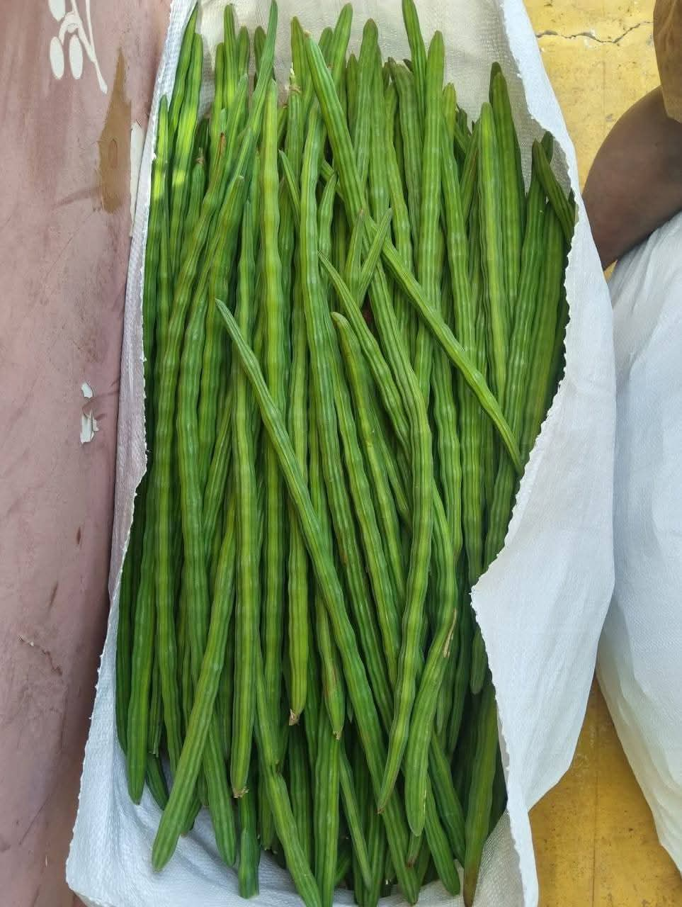

DrumstickDirect is a trusted drumstick supplier in Karnataka supplying fresh export quality moringa pods directly from farm. Located in Gauribidanur near Bangalore, we supply bulk quantities to wholesalers, supermarkets, hotels, restaurants and exporters.
We harvest fresh drumsticks from our farm and supply premium quality produce to buyers across Karnataka and India. Our focus is on freshness, quality and reliable bulk supply.
We supply export quality drumsticks suitable for supermarkets, hotels, restaurants and wholesale buyers. Our daily supply capacity can reach up to 4 tons depending on season and availability.
Our farm is located in Gauribidanur, approximately 90 km from Bangalore. This strategic location enables fast delivery to Bangalore, Chikkaballapur and other parts of Karnataka.
DrumstickDirect
Gauribidanur, Karnataka, India
📞 WhatsApp: +91 83104 57215
🌐 Website:
www.drumstickdirect.in